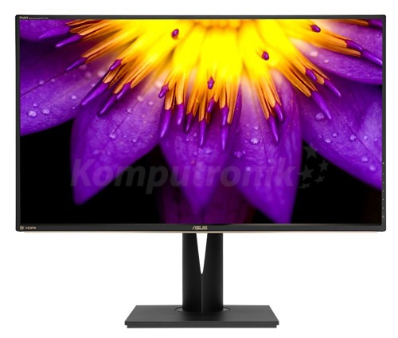
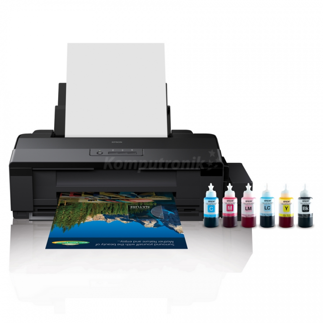
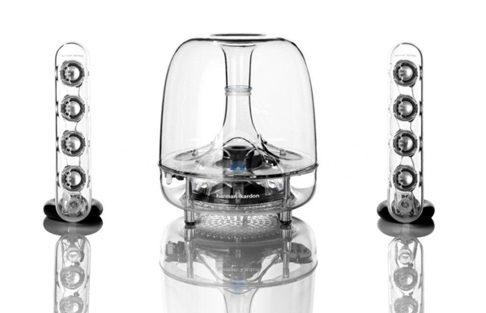

Monitor komputerowy – ogólna nazwa jednego z urządzeń wyjścia do bezpośredniej komunikacji użytkownika z komputerem. Zadaniem monitora jest natychmiastowa wizualizacja wyników działania programów uruchomionych na komputerze.
Obecnie używane monitory to ekrany komputerowe, obsługiwane przez komputer zwykle za pośrednictwem karty graficznej, która jest elementem komputera bądź może być wbudowana w sam monitor.
"https://pl.wikipedia.org/wiki/Monitor_komputera"

Drukarka – urządzenie współpracujące z komputerem oraz innymi urządzeniami, służące do przenoszenia danego tekstu, obrazu na różne nośniki druku (papier, folia, płótno itp.). Niektóre drukarki potrafią również pracować bez komputera, np. drukować zdjęcia wykonane cyfrowym aparatem fotograficznym (po podłączeniu go do drukarki lub po włożeniu karty pamięci z zapisanymi zdjęciami do wbudowanego w drukarkę slotu).
"https://pl.wikipedia.org/wiki/Drukarka"

Pamięć flash (ang. flash memory) – rodzaj trwałej pamięci komputerowej, stanowiącej rozwinięcie konstrukcyjne i kontynuację pamięci typu EEPROM
"https://pl.wikipedia.org/wiki/Drukarka"